Modular Superelastic Flexures
Intro
Flexures are mechanisms designed to predictably deform under load. They enjoy numerous advantages over rotating and sliding joints, such as lack of backlash, high reliability without maintenance, and atom-class repeatability. Conversely, flexures generally are not as stiff versus off-axis loads compared to preloaded bearings or precision ground ways. Since they depend on miniscule reversible elastic strain, the overall size of flexural mechanisms usually dwarfs their working range; while a 250 mm long linear axis may travel 200 mm, a similarly sized flexure will likely only be designed for a few millimeters of displacement. Flexures are also difficult to fabricate, usually requiring a wire-EDM to achieve the necessary accuracy of the thin elements. There are many great resources for learning more about flexure design; in particular, Marcel Thomas' website and Flexure Lecture are a good starting point, while Shorya Awtar's PhD thesis is a great deep dive into practical flexure design.Traditional flexure design rules dictate severe strain restrictions. This prevents structures from exceeding the aforementioned elastic strain limit (which is often cut down by a half or two thirds to account for fatigue), and avoids dramatic stiffness reduction from beam buckling. This is illustrated in an early test of a traditional double-four-bar linear translation mechanism fabricated from modular superelastic flexures; while the off-axis stiffness of the mechanism is quite high near its zero point, the design effectively turns into a 2-degree-of-freedom structure at extreme displacements:
Superelastic Materials
When most metals are stressed, they first exhibit a reversible linear stress-strain ("Hookean") relationship, where the slope is the material's Young's modulus. The yield point is defined as a 0.2% deviation from this line, and the rounded portion beyond is non-recoverable plastic deformation. If the material is un-stressed prior to breakage but beyond the yield point, it will recover the elastic strain but remain plastically deformed, as shown by the red line: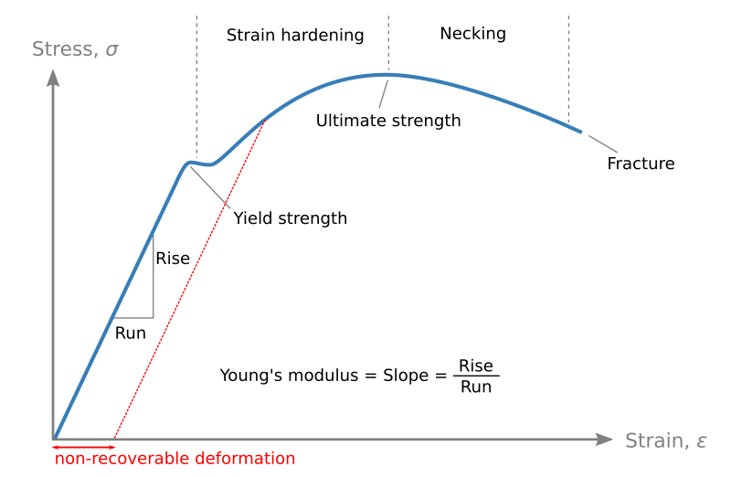
By Nicoguaro - Own work, CC BY 4.0, https://commons.wikimedia.org/w/index.php?curid=89891144, annotations in red from ZF
Superelastic (technically pseudoelastic) materials, in contrast, can recover all of their deformation beyond the linear region up to a remarkable 8-10% strain, ten times the value of most metals. This is because superelasticity is caused by reversible martensitic transformation which notably includes a sizable hysteresis loop: 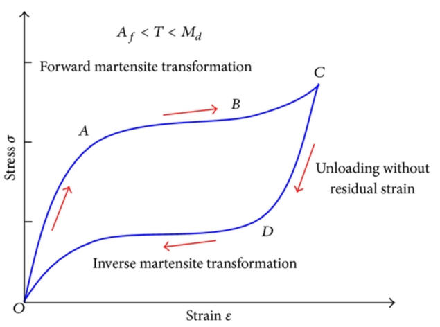
Hui Qian, Hongnan Li, Gangbing Song, and Wei Guo, CC BY 3.0, https://upload.wikimedia.org/wikipedia/commons/f/f8/ Superelastic_behavior_of_the_austenitic_to_martensitic_phase_transformation.png
One of the most common superelastic materials is Nitinol, a near-50:50 nickel titanium alloy frequently used for its shape-memory characteristics. Nitinol is easy to find commercially as a fine wire, since resistive heating turns it into a simple low-strain actuator. Bulk material is harder to come by and is quite expensive; much of this exploration was driven by the recent discovery of a reasonable (but still spendy) commercial source of stock.
Once this material was in hand, a bit was wire-EDMed into ASTM A370 subsize coupons for tensile- (but not yet hysteresis-) testing on the 4411 Instron. It just kept stretching, eventually hitting the load cell limit at 40% elongation rather than fracturing:
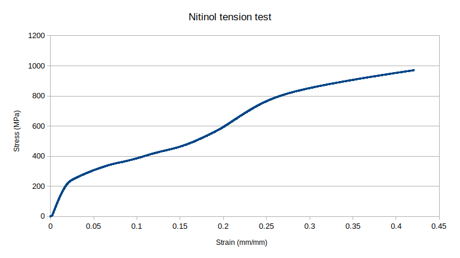
... and was generally amusing to play with:
Modular Flexures
Flexural mechanisms are often fabricated out of homonegenous slabs of material using a wire-EDM. However, good (read: reliable enough to let run overnight) design-for-wire-EDM practice avoids internal cuts, since loose bits can unpredictably fall through the workpiece and short out the machine or stall an axis. Internal cuts also require pre-drilling holes, meaning one must carefully align stock in the machine after waterjetting or drilling a preform. The enormous expense of Nitinol compounds these limitations; for reference, a 50 mm x 150 mm x 10 mm slab was $600.Modularizing flexures is an interesting proposition for the reasons discussed above but must be approached cautiously. As Marcel mentions in his Lecture, adhesives can exhibit viscoelasticity, while bolted joints can slip if they aren't torqued properly and take up a decent amount of space. Joinery methods are an attractive alternative. Here, I introduce taper-pin-secured modular flexures which use commercially available pins and tools to quickly and reversibly form stiff, compact joints:
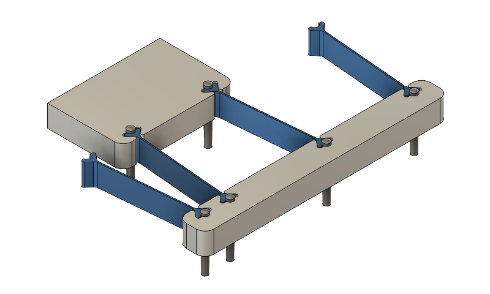
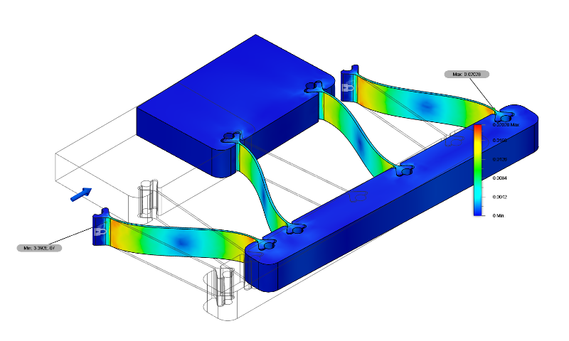
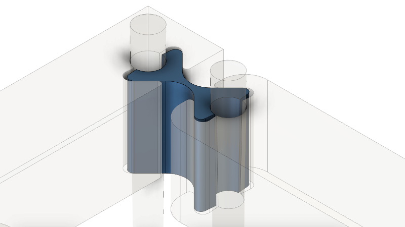
The parts can be bulk-manufactured using the wire-EDM, including the precise taper to exactly match the 48:1 taper pins:
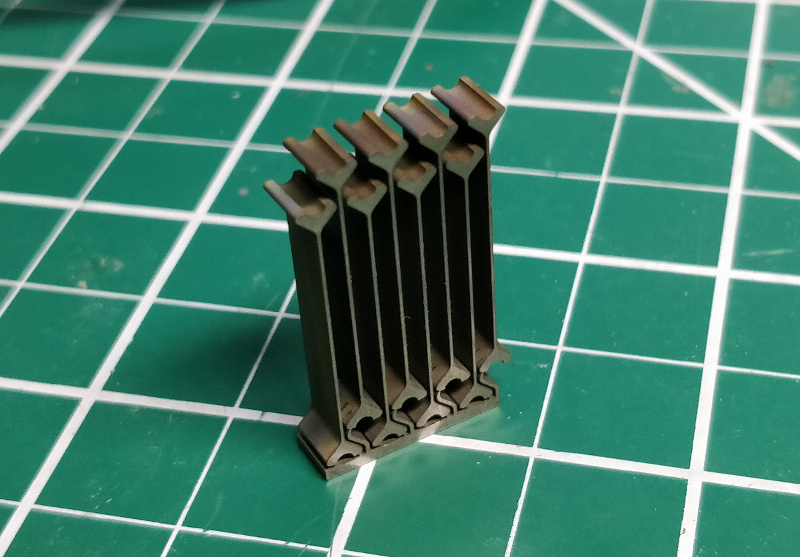
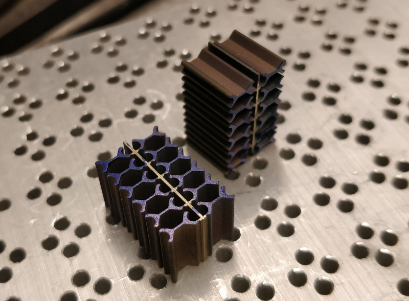
Corresponding structural bits can be wire-EDMed out of cheaper material, such as aluminum or steel; however, large parts take forever and tie up the machine. A better solution is to waterjet these parts out of aluminum and use a Nitinol flexure as a guide to taper-ream a matching hole:
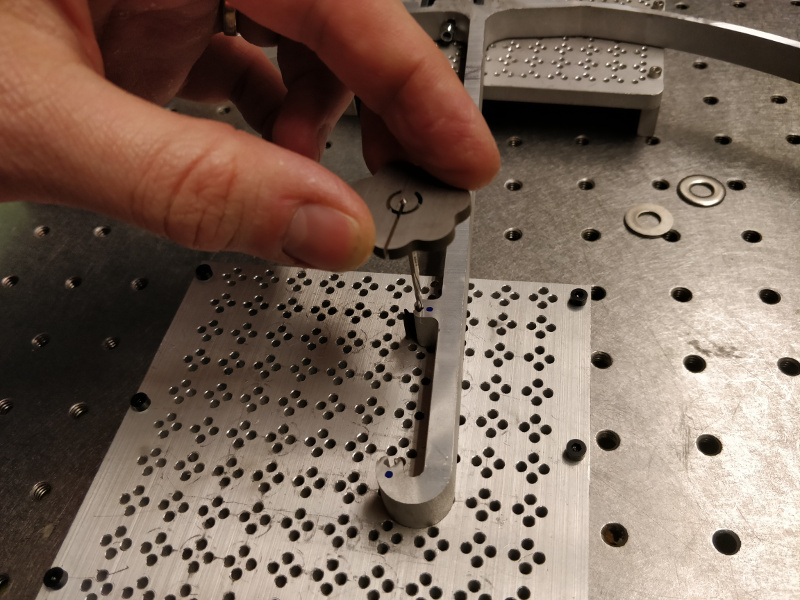
This works quite well since aluminum is significantly softer than Nitinol, so the taper evens out nicely. After this preparation, the assembly can be gently tapped together on a perforated build surface:
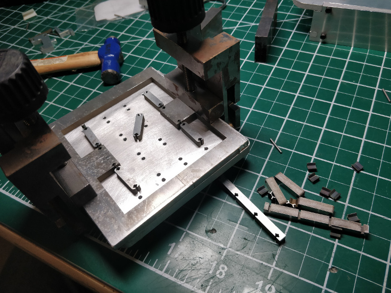
Composable Flexures
An interesting offshoot of the project extends modularity to discretization, where flexural and rigid struts can be used to freely compose 2D structures with tunable mechanical characteristics: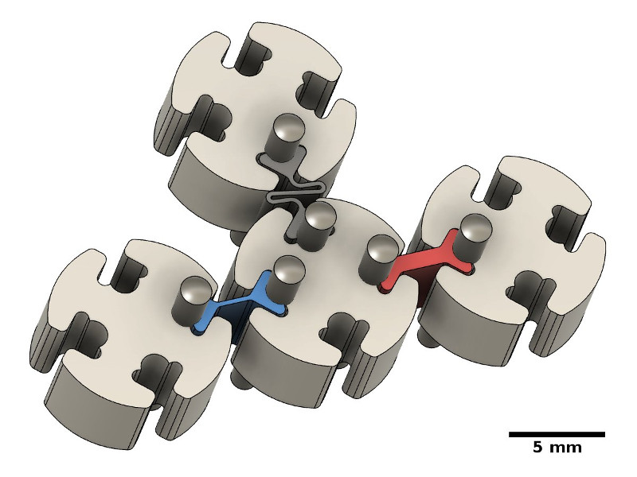
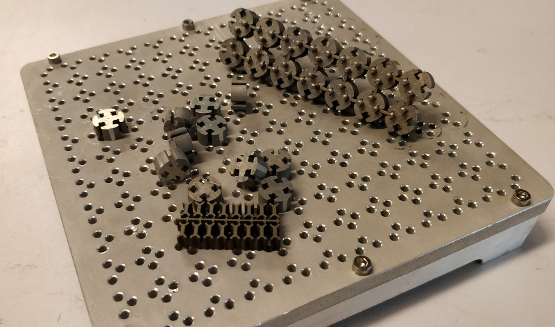
An unresolved issue with this concept relates to a core joint property: during assembly, pin insertion causes the assembly to expand by ~50 microns (or roughly 1%, given 5 mm lattice pitch) laterally due to intentional deformation of the nodes. While this can be partially solved by staged assembly, the inevitable lattice strain negatively affects complex mechanisms; in one test, a linear stage gained a severe amount of bistability. A few things were tried, such as a revised strut geometry and different node materials, but for now this direction is shelved in the interest of building functional flexural machines.
Fatigue
A common commecial application for superelastic Nitinol is in the medical device industry, where the material is used to make highly collapsable stents. Since these devices are designed for permanent implantation and failure could be fatal to the patient, the high cycle fatigue properties of Nitinol have been rigorously studied. Unfortunately, a good deal of this information lives with the medical device manufacturers. Generally, fatigue can be minimized by limiting strain to a few percent (again, this is ~10x the value of most metals for high cycle fatigue) and via careful surface treatment to reduce cracking.Several modular flexures were tested for fatigue failure using the 4411 Instron. These tests were not rigorous, as the apparatus controlled for displacement rather than precise angle; this value was instead estimated later using captured video frames and ImageJ from clips like this:
Concerningly, all samples from ~24 to ~45 degrees failed between 1000-3000 cycles. This is enough for prototyping but not sufficient for a machine:
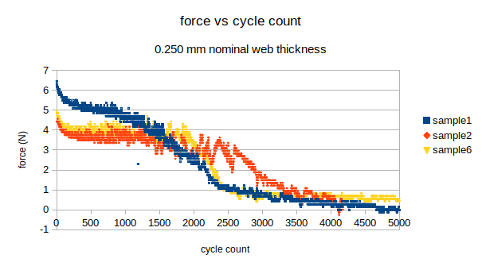
The wire-EDM surface finish is macroscopically excellent but microscopically rough, on the order of Ra ~ 10 um. A flexure was hand-polished using a 400-grit dressed-to-match Arkansas stone:
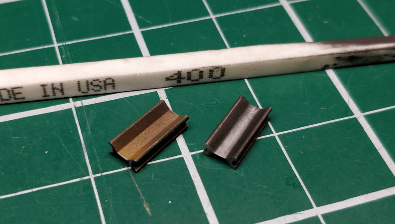
Another was mechanically polished, then electropolished in 14 M phosphoric acid at 20 V and ~3 A for 2 minutes. In both cases fatigue life improved nominally but not significantly. More investigation (and proper 3-point bend tests) is needed, but the likely solution will be to limit angular displacement to 10-15 degrees. This will increase the size of mechanisms but certainly isn't a show-stopper.